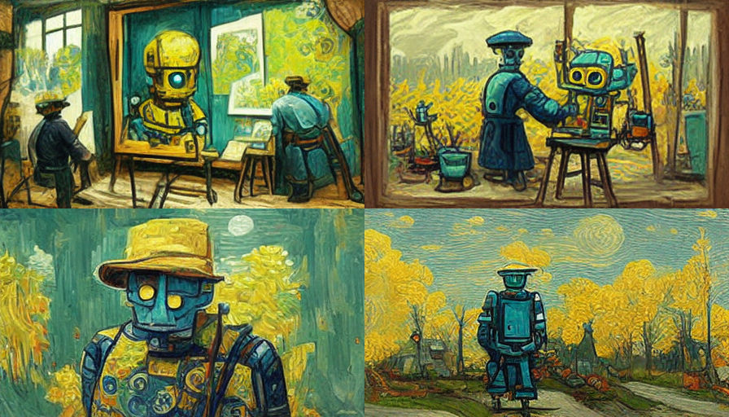
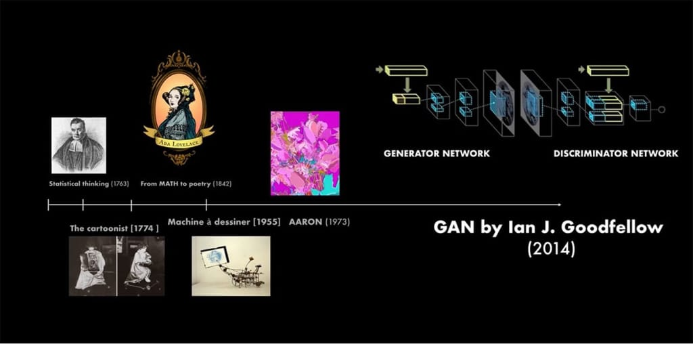
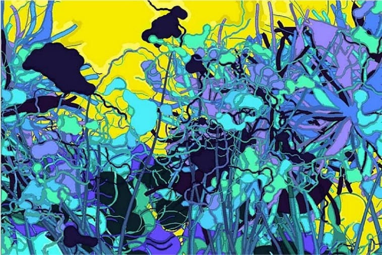
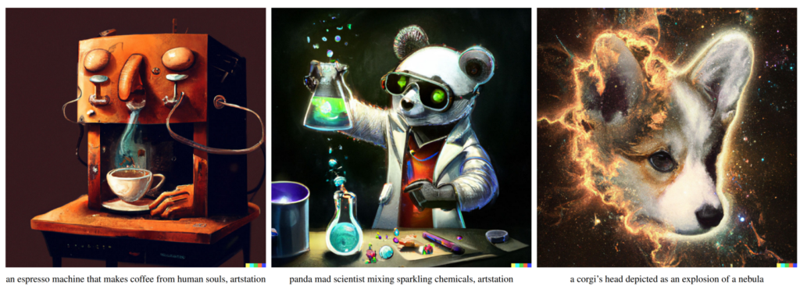

Introduction
Contents
Introduction#

Image GPT#
The Image GPT is a transformer decoder model pretrained on a large collection of images in a self-supervised fashion.

Timeline of ML Art#

The first machines that generated art had an appearance in the 18th century e.g. work of Pierre Jaquet-Droz, who made three machines.
Augusta Lovelace — a mathematician and poet, who for the first time paid attention to the fact that algorithms have a possible use outside of mathematics.
The year 1955 gave us Jean Tinguely’s drawing machine — a mechanism that, once spun up, makes drawings.
1973’s AARON algorithm — the work of Harold Cohen, the effects of which was the first computer-generated image.
In 2014, Ian G. Goodfellow’s work gave rise to the GAN (Generative Adversarial Network).
Jean Tinguely’s drawing machine#
040502 is a 2004 painting of pigment on paper by the robotic, artificially intelligent painter AARON

DALL·E 2#

Text to Image Generation Models#
Google Imagen/Parti (Unreleased) https://parti.research.google/
Open AI Dall-E 2 (Closed Beta) https://openai.com/dall-e-2/
Stable Diffusion (Closed But Soon to Open Beta) https://stability.ai/beta-signup-form
Midjourney (Free Trial, paid access) https://www.midjourney.com/app/
Shonenkov AI (Free to Use) https://t.me/shonenkovAI
Microsoft VQ Diffusion (Free to use) https://replicate.com/cjwbw/vq-diffusion
MindsEye beta (by multimodal.art) (Free to use) https://multimodal.art/mindseye
CrAIyon (Free to use) https://www.craiyon.com/?utm_source=s…
Min-dalle (Free & Paid) https://replicate.com/kuprel/min-dalle
Wombo (Free & Paid) https://app.wombo.art/
Laion AI Erlich (Free & Paid) https://replicate.com/laion-ai/erlich
Glid-3-xl (Free & Paid) https://replicate.com/jack000/glid-3-xl
Night Cafe (Free & Paid) https://creator.nightcafe.studio/explore
Disco Diffusion (Free & Paid) https://replicate.com/nightmareai/dis…
Cog View 2 (Free & Paid) https://replicate.com/thudm/cogview2
Pixray (Free & Paid) https://replicate.com/pixray/text2image
Hot Pot AI (free & Paid) https://hotpot.ai/art-maker